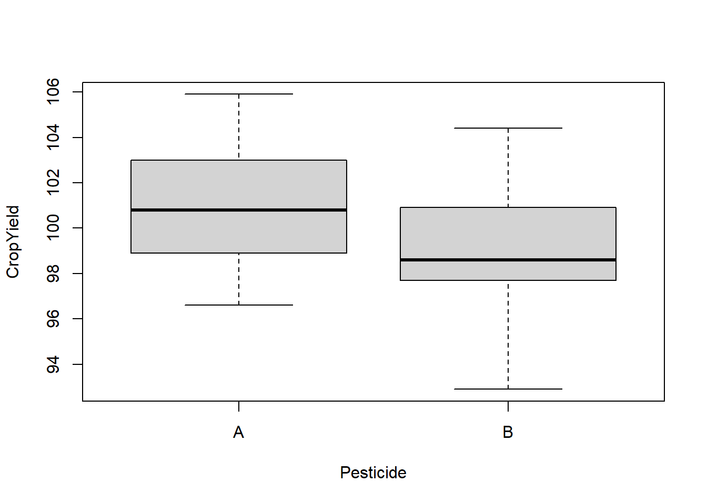
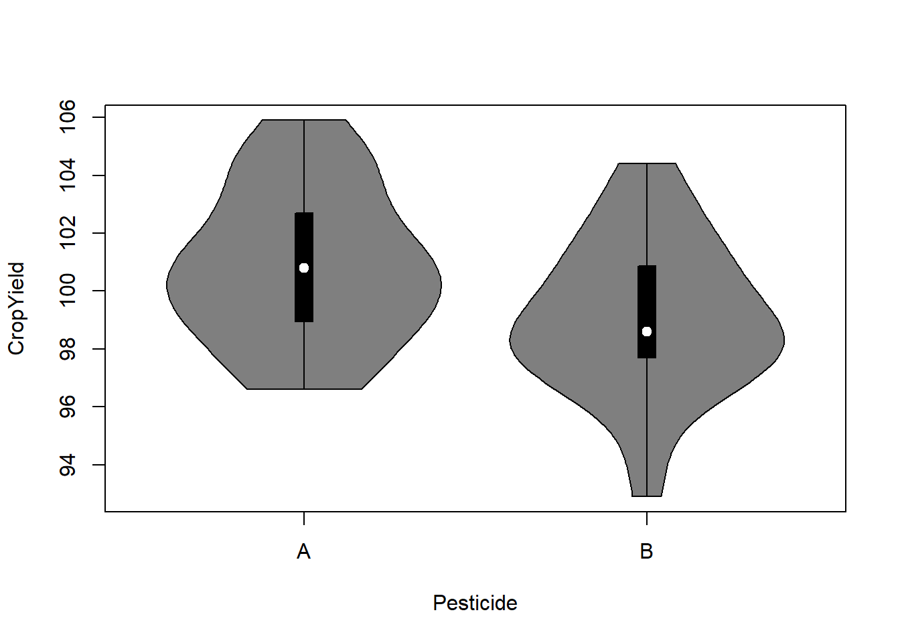
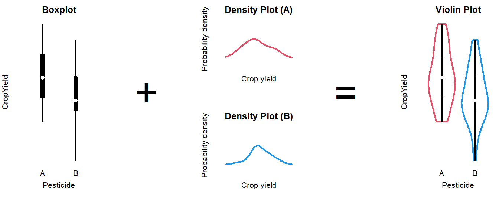

Tutorial 1 T-Test
A hypothesis test to compare two means to see if they differ significantly. Assumptions depend on the type of \(t\)-test.
Summary
- Read the data into R ;
- Visualize the data;
- Choose an appropriate type of \(t\)-test ;
- Report a conclusion;
- Incorporating this in scientific literature.
You can download the tutorial here and the required data set here.
1.1 Read the Data into R
I recommend saving data as comma-separated values (CSV). If you prefer reading data directly from Excel, have a look here.
Details
- Save the data in a folder;
- Open RStudio and create a new R markdown file; (File > New File > R Markdown)
- Save your R markdown file to the same location as the data;
- Set working directory to source file location. (Session > Set Working Directory > To Source File Location)
DF <- read.csv("two-groups.csv")Did that work? There are several ways to check:
str(DF)
summary(DF)
head(DF)Explanation of the output
str(DF)## 'data.frame': 60 obs. of 3 variables:
## $ X : int 1 2 3 4 5 6 7 8 9 10 ...
## $ Pesticide: chr "A" "A" "A" "A" ...
## $ CropYield: num 101.5 98.9 105.9 100.9 101 ...This command shows the structure of the data. It is a data frame with \(n = 60\) observations and 2 variables. Pesticide is a character vector (chr) and CropYield a numeric vector (num).
## X Pesticide CropYield
## Min. : 1.00 Length:60 Min. : 92.90
## 1st Qu.:15.75 Class :character 1st Qu.: 98.08
## Median :30.50 Mode :character Median : 99.85
## Mean :30.50 Mean : 99.96
## 3rd Qu.:45.25 3rd Qu.:101.55
## Max. :60.00 Max. :105.90## X Pesticide CropYield
## 1 1 A 101.5
## 2 2 A 98.9
## 3 3 A 105.9
## 4 4 A 100.9
## 5 5 A 101.0
## 6 6 A 100.4My output looks different
Then provided you did everything else correctly, the most likely reason is that your data was saved with a version of Excel where a comma is used as a decimal separator (e.g., the Dutch version). The solutions for this is simple, use read.csv2:
DF <- read.csv2("some-data-with-commas.csv")Common mistakes
- Remember to include the file extension (e.g., “two-groups.csv”) when typing the file name.
- You cannot read Excel files (.xls, .xlsx) with this function. Instead, follow the guide here, or save your data as CSV.
- Don’t open the CSV file with Excel. You don’t need Excel or Google Sheets or any other program besides R and RStudio. If you have saved your data as CSV, you can close Excel.
The next step is to ensure categorical variables are read as factors. This will allow us to use generic functions like plot and summary in a more meaningful way.
Why not just use character?
A character vector is just strings of text, numbers and/or symbols. If you were to produce a summary, this happens:
summary(DF$Pesticide)## Length Class Mode
## 60 character characterIt tells us this object contains 60 values, and it is stored and treated as a string of text.
The generic plot function doesn’t even work at all:
plot(CropYield ~ Pesticide, DF)Error in plot.window(...) : need finite 'xlim' values
In addition: Warning messages:
1: In xy.coords(x, y, xlabel, ylabel, log) : NAs introduced by coercion
2: In min(x) : no non-missing arguments to min; returning Inf
3: In max(x) : no non-missing arguments to max; returning -InfNow convert the variables to factors and see how that changes the output.
(Run the code below, then run summary(DF$Pesticide), or plot(DF$Pesticide) for example.)
DF$Pesticide <- factor(DF$Pesticide)1.2 Visualize the Data
There are different ways to go about this. A basic, but still very popular choice is the boxplot:
boxplot(CropYield ~ Pesticide, DF)
What to look for
Potential Outliers
A boxplot shows either of the following:
Figure 1.1: What is displayed in a boxplot in case all observations are within a certain distance from the box (A), or otherwise (B).
The interquartile range (IQR) is simply the size of the box. If all observations lie within \(1.5\times\) this range from the box, then the whiskers show the extremes of the data (fig. 1.1 A). Otherwise, the observations are drawn separately 1.1 B). The IQR is usually not shown in a boxplot, but is used internally to calculate the location of the whiskers and marked observations (if any).
Marked observations are not outliers
This is a common misconception. Though it can be an indication of outlyingness, a boxplot alone cannot tell you whether these observations will strongly affect your analysis:
- If you have a large enough sample size, you will find more extreme observations, which are eventually drawn outside the IQR.
- Skewed values (see next section) will almost always show ‘outliers’ in the direction of skew, but these are unlikely to be outliers in the context of an appropriate model for skewed data.
- The \(1.5\times\) IQR rule is nothing special, it is merely convention. A boxplot is just a quick way to visualize numeric values.
Skew
Skew means the data-generating process follows a probability distribution that is not symmetric. In a boxplot, skew looks like this:
Figure 1.2: A boxplot of symmetric (A), right-skewed (B), and left-skewed values.
Skew is not necessarily a problem, unless it persists in the residuals of a model that assumes normally distributed errors. For an explanation of skew, see the video on probability distributions .
Differences Between Groups
A boxplot is not just a nice tool for yourself to inspect your data, but is also an effective tool to visually communicate the evidence for difference between groups:
Figure 1.3: A comparison of crop yield for pesticides A and B.
From the plot you can conclude:
- Neither group appears to have outliers;
- Neither group appears skewed;
- Pesticide A seems to yield more crop than B, but there is considerable overlap;
- The variance of both groups is similar, because the boxes are similarly sized.
This is just a sample, so whether this difference is significant, should be determined with a test.
How to improve your plot
Some basic adjustments that improve any plot:
- Use informative axis labels, with unit of measurement if appropriate;
- Add an informative caption;
- Keep the numbers on the axes horizontal where possible;
- Remove unnecessary plot elements, like the box around the figure.
The changes to the code I made below can all be found in the help pages ?boxplot and ?par. I am also a big fan of the eaxis function from the package sfsmisc. The caption is added as a chunk option (i.e., ```{r, fig.cap = "..."}).
# Load a package for nice axes
library("sfsmisc")
# Change the margins (bottom, left, top, right)
par(mar = c(4, 4, 0, 0) + 0.1)
# Create the coordinate system
boxplot(CropYield ~ Pesticide, DF, axes = FALSE, boxwex = 0.25, staplewex = 0,
ylab = "Crop yield (kg)", ylim = c(92, 108), lwd = 2, lty = 1)
# Add axes
axis(1, 1:2, c("A", "B"))
eaxis(2)
# Add a lightgrey background
polygon(x = c(-1, 3, 3, -1, -1), y = c(90, 90, 110, 110, 90), col = "grey95")
# Add a simple grid
abline(h = seq(90, 110, 1), col = "white", lwd = 1)
abline(h = seq(90, 110, 2), col = "white", lwd = 1.5)
# Redraw the boxplots on top
boxplot(CropYield ~ Pesticide, DF, axes = FALSE, boxwex = 0.25, staplewex = 0,
col = "steelblue", add = TRUE, lwd = 2, lty = 1)
# Restore the default margins for subsequent plots
par(mar = c(5, 4, 4, 3) + 0.1)
Figure 1.4: A comparison of crop yield for pesticides A and B.
Alternative: Violin plot
A more modern take on the boxplot is a violin plot. It combines a boxplot and a density plot. This type of visualization is richer in information than just a boxplot, but it is only meaningful if you have enough observations per group (e.g., >10):
library("vioplot") # install if missing
vioplot(CropYield ~ Pesticide, DF)
How to interpret a violin plot
Here is a breakdown of the components shown in a violin plot:

The density plot, if you are unfamiliar with it, is like a continuous version of a histogram. It shows which values are more and less likely in the sample.
1.3 Choose an Appropriate T-Test
This part is still a work in progress. Refer to the video for now.
One-sided or two-sided
You can test in two directions: Either the mean of A is greater than that of B, or the other way around. If you test for both possibilities, the test is called two-sided. Below is a short summary of the possibilities.
| Type | Question | Syntax | Null-hypothesis |
|---|---|---|---|
| two-sided | Is there a difference in group means? |
t.test(..., alternative = "two.sided"
|
\(H_0: \mu_A \neq \mu_B\) |
| one-sided | Is the mean of A greater than that of B? |
t.test(..., alternative = "greater"
|
\(H_0: \mu_A \leq \mu_B\) |
| one-sided | Is the mean of A less than that of B? |
t.test(..., alternative = "less"
|
\(H_0: \mu_A \geq \mu_B\) |
A one-sided test is more powerful than a two-sided test. For instance, if you want to know whether a treatment yields lower blood pressure than a control group, you should use a one-sided test.
If you test one-sided, you have to be able to defend this choice without seeing the data, or any plots. If you are unsure, test two-sided.
Equal or unequal variance
Figure 1.5: Variance is the extent to which individuals differ from their group mean. In the case of male and female human height, which do you think is more realistic?
First, think about it in the context of the research: Does it make sense for these groups to vary to the same extent; should they have similar individual differences?
If you can’t think of the right answer to that question, the safer of the two assumptions is unequal variance. This will estimate a variance for both groups separately, at the cost of some power.
From the boxplot we could already tell that the group variances are more or less equal in the example. In cases where it isn’t obvious, you could conduct an \(F\)-test:
var.test(CropYield ~ Pesticide, DF)##
## F test to compare two variances
##
## data: CropYield by Pesticide
## F = 1.0152, num df = 29, denom df = 29, p-value = 0.9678
## alternative hypothesis: true ratio of variances is not equal to 1
## 95 percent confidence interval:
## 0.4832202 2.1330227
## sample estimates:
## ratio of variances
## 1.015244In this case, the ratio \(\frac{\text{Var}(A)}{\text{Var}(B)} \approx 1\) (1.015244), with a \(p\)-value of 0.9678, indicating the variances do not differ significantly.
(If these values came from populations with equal variance, you would have a \(96.8\%\) chance of drawing a sample with at least this large a difference in variance. This chance is very large, so we do not reject the null-hypothesis.)
One-sample \(t\)-test
It is also possible to compare a single group mean to a fixed point. For example, does the temperature in class rooms differ significantly from 20\(^\circ\)C?
You can do this in R as follows:
# Measurements from 7 class rooms
Temp <- c(24, 19, 19, 23, 19, 22, 22)
# Do these measurements differ from an average of 20 degrees?
t.test(Temp, mu = 20)##
## One Sample t-test
##
## data: Temp
## t = 1.4292, df = 6, p-value = 0.2029
## alternative hypothesis: true mean is not equal to 20
## 95 percent confidence interval:
## 19.18616 23.09955
## sample estimates:
## mean of x
## 21.14286In this example, there is insufficient evidence to conclude a difference from 20\(^\circ\)C (95% CI: 19.2–23.1).
Paired \(t\)-test
…
Non-parametric alternative
…
The advantage of this approach is that we use all observations (both A and B) at once to assess the assumptions. This is especially helpful when you only have a small number of observations in both groups, because diagnostics on small sample sizes is largely guesswork.
In the example shown here, the appropriate choice would be an independent, two-sample, two-sided, equal variance \(t\)-test:
t.test(CropYield ~ Pesticide, data = DF, var.equal = TRUE)Show output
##
## Two Sample t-test
##
## data: CropYield by Pesticide
## t = 2.5604, df = 58, p-value = 0.01308
## alternative hypothesis: true difference in means between group A and group B is not equal to 0
## 95 percent confidence interval:
## 0.3745639 3.0587694
## sample estimates:
## mean in group A mean in group B
## 100.82000 99.10333In the output we see:
- The \(t\)-value (
t = 2.5604); - The degrees of freedom used to compute the \(p\)-value (
df = 58); - The resulting \(p\)-value (
p-value = 0.01308); Computed as2 * pt(2.5604, 58, lower.tail = FALSE) - A 95% confidence interval (0.37–3.06);
- The estimated group means (\(\bar{y}_A = 100.8\), \(\bar{y}_B = 99.1\)).
What to do with this output is described in the next section.
1.4 Correctly Phrase the Results
If the \(p\)-value is less than the chosen level of significance
(This is the case in the example.)
Examples of precise language:
- Crop yield differed significantly by type of pesticide (\(p = 0.0131\)), with pesticide A resulting in 1.7 kg higher crop yield on average;
- Pesticide A yielded significantly higher crop yield than B (\(\hat{\beta} = 1.7\) kg, \(p = 0.0131\));
- Pesticide A yielded on average 1.7 kg higher crop yield than B (95% CI: 0.38–3.1);
Examples of incorrect, incomplete, or imprecise language:
- The alternative hypothesis was true // The null-hypothesis was false;
- The difference was significant (\(p < 0.05\));
- Pesticide A outperforms pesticide B.
Why paste tense?
The results of a single experiment, no matter how convincing, can never prove something to be true. The results were observed, and in this one experiment, A was better than B.
Use present tense only for statements that have been demonstrated repeatedly, are generally agreed upon, or are easily observable, e.g.:
- Smoking causes cancer;
- Current climate-change is mainly caused by human activities;
- Most people use smartphones nowadays.
If the \(p\)-value is greater than the chosen level of significance
Examples of precise language:
- Crop yield did not differ significantly by type of pesticide (\(p = \dots\));
- There is insufficient evidence to conclude either pesticide worked better (\(\hat{\beta} = \dots\), \(p = \dots\));
- There was a trend towards higher crop yield with pesticide A (\(\hat{\beta} = \dots\)), but this difference was not significant (95% CI: …).
Examples of incorrect, incomplete, or imprecise language:
- Pesticide A performed equally well as pesticide B;
- There was no difference (\(p < 0.05\));
- We accept the null-hypothesis.
Why can’t I say I accepted the null-hypothesis?
This is imprecise language because it distorts the order of null-hypothesis significance testing. Every tests starts with pretending the null-hypothesis is true, and then considering how rare a result this would be. You did not accept the null-hypothesis because of the \(p\)-value, but rather, you started by taking on the null-hypothesis to even compute that \(p\)-value.
1.5 Incorporating This in a Paper
Here you can find examples of how to justify the methods used, explain the results found and write a discussion. This is meant to show you what belongs where, and what level of detail is common in scientific literature.
Remember to use your own words—paraphrase to avoid plagiarism.
Methods
(In this section, you should describe the data collection and analysis to an extent that a fellow expert could reproduce your study.)
A total of \(n = 60\) plots of land where corn is cultivated were selected from farms in South Holland, The Netherlands (figure …). Pesticide A or B was applied randomly in a concentration of … to 30 plots each.
All statistical analyses were conducted in R, version 4.2.1, using the RStudio interface.1,2 Difference in group means was assessed with an independent student’s \(t\)-tests for equal variance. Conditional normality was assessed through normal quantile-quantile plots, using the car package.3
Note:
- Check your R version number with
version; - Justify the type of \(t\)-test used; (For example, if you use an independent \(t\)-test, the methods section should sufficiently describe how observations were collected, such that the reader can judge whether these observations are indeed independent.)
- If you assume unequal variance, the test is called a Welch \(t\)-test;
- You should cite any packages used to perform analyses, generate tables or figures that made it into the paper, e.g.;
- Normal quantile-quantile plots were generated with the
carpackage.3
- Normal quantile-quantile plots were generated with the
- You should not cite packages used only internally, e.g.:
- We used
readxlto enter the data in R.4
- We used
Results
(In this section you should mention the results without giving any interpretation yet.)
For general advice on phrasing, see: Correctly Phrase the Results. In this section, you should include your boxplot and explain in brief what the outcome of the \(t\)-test was.
It is very common to see boxplots with significance stars, but the interpretation of these stars is not consistent and you should mention the actual, non-discretized \(p\)-value at least somewhere in the results.
When you perform multiple tests, you can summarize the results in a table, which you refer to in the results section. For example, here is how you could report the results of a qPCR experiment where 5 genes were tested for differential expression in cases and controls, and the resulting \(p\)-values were corrected for multiple testing:
| Gene | Estimate | SE | \(t\) | \(p\) | \(p_{\text{adjusted}}\) |
|---|---|---|---|---|---|
| ACTB | \(0.107\) | \(0.354\) | \(0.302\) | \(0.382\) | \(1.000\) |
| CDH1 | \(-0.842\) | \(0.251\) | \(-3.355\) | \(1.150\times 10^{-3}\) | \(5.750\times 10^{-3}\) |
| NF1 | \(-0.481\) | \(0.334\) | \(-1.441\) | \(0.0805\) | \(0.4025\) |
| PTEN | \(0.812\) | \(1.205\) | \(0.674\) | \(0.747\) | \(1.000\) |
| TP53 | \(3.419\) | \(0.682\) | \(5.013\) | \(1.340\times 10^{-5}\) | \(6.700\times 10^{-5}\) |
Discussion
(In this section, you should not mention results, but the conclusions based on those results.)
If the test was significant and the difference large enough to be biologically relevant:
- For corn grown in areas of similar climate as South Holland, The Netherlands, we recommend using pesticide A;
- Further research could demonstrate whether this difference is similar in other plant species, and how it depends on other factors, such as soil composition and irrigation.
- (Overclaiming) Pesticide A has been proven to outperform B for corn grown in South Holland, The Netherlands.
- (Overgeneralizing) Pesticide A yields more crops than B.
If the test was insignificant or the difference too small to be biologically relevant:
- (If the study was sufficiently powerful) Despite a fairly large sample size, we were unable to demonstrate a difference in crop yield, suggesting both pesticides work equally well.
- (If the study was underpowered) We were unable to demonstrate a difference in crop yield, though a follow-up study with a larger sample size may conclude otherwise.
- (Appeal to ignorance) We have demonstrated there is no difference between pesticide A and B.
Why can’t I conclude there is no difference?
This is an inherent limitation of the \(p\)-value. Under the null-hypothesis, any \(p\)-value is as likely as any other (uniformity). Therefore, even if the \(p\)-value is very large, this cannot be interpreted as evidence for the null-hypothesis.
For example, a \(p\)-value of \(0.20\) is just as common a result as \(0.80\) when the null-hypothesis is correct. The \(p\)-value can only be used as evidence against the null-hypothesis (when it is small).
If you want to perform a test to find out whether the null-hypothesis is correct, what you are looking for is called an equivalence test. For \(t\)-tests, this can be implemented easily through TOST.
Generating citations
Any packages used in analysis should be cited in the methods section. The citations used here can be easily obtained as follows (note that this requires the packages to be installed):
citation() # Use this to cite R
RStudio.Version() # Use this to cite RStudio
citation("car") # Use this to cite a package (here: car)You can add these entries to a reference manager (e.g., Zotero), or keep a BibTeX file yourself, as shown here.
Supplementary
(The following is not usually found in the main text, but can be included as supplementary material.)
Including diagnostic plots can be an effective way to convince the reader you considered the assumptions of the test or model used:
Figure 1.6: Normal quantile-quantile plot of the studentized residuals showed no notable deviation from normality.
If you include any supplementary material, you should refer to it in the main text.